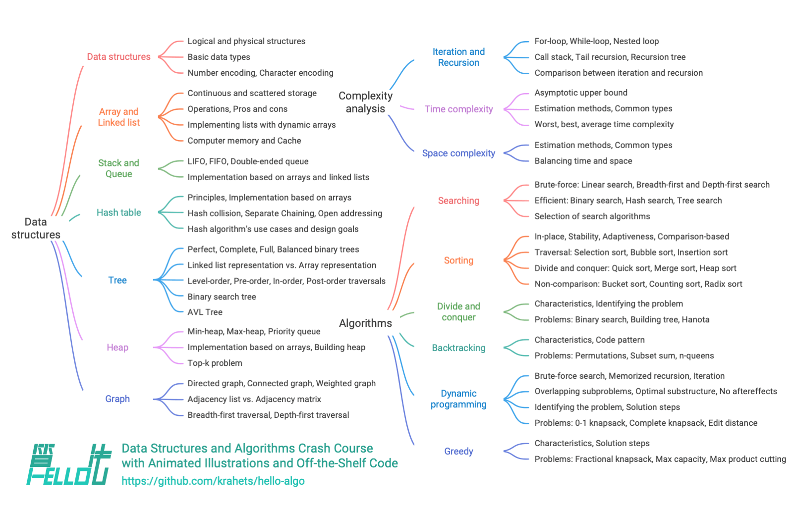

المقدمة
عن هذا الكتاب
يهدف هذا المشروع إلى إنشاء درس تمهيدي مفتوح المصدر ومجاني وودود للمبتدئين في بنى البيانات والخوارزميات.
- يستخدم الكتاب بأكمله رسوماً توضيحية متحركة، بمحتوى واضح سهل الفهم ومنحنى تعلّم سلس، فيأخذ المبتدئين في رحلة عبر عالم بنى البيانات والخوارزميات.
- يمكن تشغيل الشيفرة المصدرية بنقرة واحدة، مما يساعد القراء على تحسين مهاراتهم البرمجية عبر التدريب وفهم كيفية عمل الخوارزميات والتنفيذ الأساسي لبنى البيانات.
- نشجّع القراء على التعلّم من بعضهم البعض، ونرحّب بالجميع لطرح الأسئلة ومشاركة الأفكار في قسم التعليقات، للتقدم معاً عبر النقاش والتبادل.
الجمهور المستهدف
إذا كنت مبتدئاً في الخوارزميات ولم تدرسها قط، أو كانت لديك بعض خبرة حل المسائل لكن فهمك لبنى البيانات والخوارزميات ضبابي فحسب، فهذا الكتاب مُفصَّل خصيصاً لك!
وإذا كنت قد راكمت قدراً معيناً من خبرة حل المسائل وألممت بمعظم أنواع الأسئلة، فيستطيع هذا الكتاب مساعدتك على مراجعة منظومة معرفتك الخوارزمية وتنظيمها، ويمكن استخدام الشيفرة المصدرية في المستودع «كصندوق أدوات لحل المسائل» أو «قاموس للخوارزميات».
وإذا كنت «خبيراً» في الخوارزميات، فنحن نتطلع إلى تلقّي اقتراحاتك القيّمة، أو الانضمام إلينا مساهماً.
المتطلبات المسبقة
تحتاج إلى معرفة برمجية أساسية بلغة واحدة على الأقل، وإلى القدرة على قراءة شيفرة بسيطة وكتابتها.
بنية المحتوى
يظهر المحتوى الرئيسي لهذا الكتاب في الشكل أدناه.
- تحليل التعقيد: أبعاد تقييم بنى البيانات والخوارزميات وطرائقه. وطرق حساب التعقيد الزمني والتعقيد المكاني وأنواعهما الشائعة وأمثلتهما، وغير ذلك.
- بنى البيانات: طرق تصنيف أنواع البيانات الأساسية وبنى البيانات. والتعريفات والمزايا والعيوب والعمليات الشائعة والأنواع الشائعة والتطبيقات النموذجية وطرق التنفيذ وغير ذلك لبنى البيانات مثل المصفوفات والقوائم المترابطة والمكدسات والطوابير وجداول التجزئة والأشجار والأكوام والرسوم البيانية.
- الخوارزميات: التعريف والمزايا والعيوب والكفاءة وسيناريوهات التطبيق وخطوات حل المسائل والمسائل المثالية لخوارزميات مثل البحث والترتيب والتقسيم والتغلب والتتبّع الرجعي والبرمجة الديناميكية والخوارزميات الجشعة.

شكر وتقدير
تحسّن هذا الكتاب باستمرار بفضل الجهود المشتركة لكثير من المساهمين في مجتمع المصادر المفتوحة. والشكر لكل مساهم بذل وقتاً وجهداً، وهم (بالترتيب الذي يولّده GitHub تلقائياً): krahets, coderonion, Gonglja, nuomi1, Reanon, justin-tse, hpstory, danielsss, curtishd, night-cruise, S-N-O-R-L-A-X, rongyi, msk397, gvenusleo, khoaxuantu, rivertwilight, K3v123, gyt95, zhuoqinyue, yuelinxin, Zuoxun, mingXta, Phoenix0415, FangYuan33, GN-Yu, longsizhuo, pengchzn, QiLOL, Cathay-Chen, guowei-gong, xBLACKICEx, IsChristina, JoseHung, qualifier1024, hello-ikun, magentaqin, Guanngxu, thomasq0, sunshinesDL, L-Super, Transmigration-zhou, WSL0809, Slone123c, lhxsm, yuan0221, what-is-me, theNefelibatas, Shyam-Chen, sangxiaai, longranger2, codeberg-user, xiongsp, JeffersonHuang, prinpal, seven1240, Wonderdch, malone6, xiaomiusa87, gaofer, bluebean-cloud, a16su, SamJin98, hongyun-robot, nanlei, XiaChuerwu, yd-j, iron-irax, mgisr, steventimes, junminhong, heshuyue, danny900714, Nigh, Dr-XYZ, MolDuM, XC-Zero, reeswell, PXG-XPG, NI-SW, Horbin-Magician, Enlightenus, YangXuanyi, xjr7670, beatrix-chan, DullSword, qq909244296, iStig, boloboloda, hts0000, gledfish, fbigm, echo1937, jiaxianhua, wenjianmin, keshida, kilikilikid, lclc6, lwbaptx, linyejoe2, liuxjerry, szu17dmy, dshlstarr, Yucao-cy, coderlef, czruby, bongbongbakudan, beintentional, ZongYangL, ZhongYuuu, ZhongGuanbin, hezhizhen, linzeyan, ZJKung, JTCPOWI, KawaiiAsh, luluxia, xb534, ztkuaikuai, yw-1021, ElaBosak233, baagod, zhouLion, yishangzhang, yi427, yanedie, yabo083, weibk, wangwang105, th1nk3r-ing, tao363, 4yDX3906, syd168, sslmj2020, smilelsb, siqyka, selear, sdshaoda, Xi-Row, popozhu, nuquist19, noobcodemaker, XiaoK29, chadyi, lyl625760, lucaswangdev, llql1211, 0130w, shanghai-Jerry, EJackYang, Javesun99, eltociear, lipusheng, KNChiu, BlindTerran, ShiMaRing, lovelock, FreddieLi, FloranceYeh, fanchenggang, gltianwen, goerll, nedchu, curly210102, CuB3y0nd, KraHsu, CarrotDLaw, youshaoXG, bubble9um, Asashishi, Asa0oo0o0o, fanenr, eagleanurag, akshiterate, 52coder, foursevenlove, KorsChen, hopkings2008, yang-le, realwujing, Evilrabbit520, Umer-Jahangir, Turing-1024-Lee, Suremotoo, paoxiaomooo, Chieko-Seren, Senrian, Allen-Scai, 19santosh99, ymmmas, Risuntsy, Richard-Zhang1019, RafaelCaso, qingpeng9802, primexiao, Urbaner3, codetypess, nidhoggfgg, MwumLi, CreatorMetaSky, martinx, ZnYang2018, hugtyftg, logan-qiu, psychelzh, Kunchen-Luo, Keynman, and KeiichiKasai.
أُنجزت أعمال مراجعة الشيفرة لهذا الكتاب بواسطة coderonion وcurtishd وGonglja وgvenusleo وhpstory وjustin-tse وkhoaxuantu وkrahets وnight-cruise وnuomi1 وReanon وrongyi (بالترتيب الأبجدي). والشكر لهم على الوقت والجهد الذي بذلوه؛ فقد ساعدوا في الحفاظ على اتساق الشيفرة وتوحيدها عبر إصدارات اللغات المختلفة.
راجع الإصدار الإنجليزي من هذا الكتاب yuelinxin وK3v123 وmagentaqin وQiLOL وPhoenix0415 وSamJin98 وyanedie وRafaelCaso وpengchzn وthomasq0؛ وراجع الإصدار الياباني eltociear؛ وراجع الإصدار الروسي И. А. Шевкун وYuyan Huang؛ وراجع الإصدار الصيني التقليدي Shyam-Chen وDr-XYZ. وبفضل مساهماتهم، يستطيع هذا الكتاب خدمة قاعدة أوسع من القراء، ونحن ممتنون لهم امتناناً عميقاً.
طوّر zhongfq أداة إنشاء كتاب ePub الإلكتروني لهذا الكتاب. ونشكره على مساهمته التي توفّر للقراء طريقة قراءة أكثر مرونة.
وقد تلقيت أثناء إنشاء هذا الكتاب مساعدة من أشخاص كثيرين.
- الشكر لمرشدي في الشركة، الدكتور Li Xi، الذي شجعني خلال محادثة على «المبادرة إلى التنفيذ سريعاً»، فقوّى عزيمتي على كتابة هذا الكتاب؛
- والشكر لصديقتي Bubble، أول قارئة لهذا الكتاب، التي قدّمت كثيراً من الاقتراحات القيّمة من منظور مبتدئ في الخوارزميات، فجعلت هذا الكتاب أكثر قرباً من المبتدئين؛
- والشكر لـTengbao وQibao وFeibao على ابتكار اسم مبدع لهذا الكتاب، يثير في ذاكرة الجميع لحظات كتابة أول سطر شيفرة «Hello World!»؛
- والشكر لـXiaoquan على تقديم مساعدة مهنية في حقوق الملكية الفكرية، أدت دوراً مهماً في تطوير هذا الكتاب مفتوح المصدر؛
- والشكر لـSutong على تصميم الغلاف والشعار الجميلين لهذا الكتاب، وعلى مراجعتهما بصبر مرات كثيرة بناءً على إصراري المفرط في الكمال؛
- والشكر لـ@squidfunk على اقتراحات التنضيد، وعلى تطوير سمة التوثيق مفتوحة المصدر Material-for-MkDocs.
قرأت أثناء عملية الكتابة كثيراً من الكتب والمقالات في بنى البيانات والخوارزميات. وقد كانت هذه الأعمال نماذج ممتازة لهذا الكتاب وساعدت في ضمان دقة محتواه وجودته. وأتوجه بالشكر إلى جميع الأساتذة والأسلاف على مساهماتهم البارزة!
يدعو هذا الكتاب إلى منهج التعلّم بالممارسة، وقد استلهمت في هذا الجانب إلهاماً عميقاً من Dive into Deep Learning. وأوصي بشدة بهذا العمل الممتاز لجميع القراء.
شكراً من القلب لأمي وأبي. فدعمكما وتشجيعكما هما اللذان أتاحا لي الفرصة لخوض هذا المشروع الممتع.